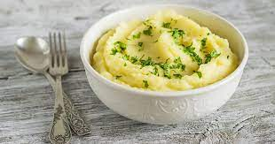

Mashed Potatoes

Description
Mashed Potatoes is a mixture of pounded potatoes, heavy cream and some milk.
Some other people add basils or corriander to add a little color.
Ingredients
- 5 large potatoes
- 1 tablespoon heavy cream
- Half cup milk
- Basils and/or corriander
- Salt
- (Optional) Black Pepper
Steps
- Peal off your potatoes and wash them thoroughly
- In boiling water add the potatoes and let them cook evenly
- After around 20 minutes the potatoes should be ready, take out
and sieve out the rest of the water if any remained.
- Take a masher murphy and mash the potatoes. Add salt to taste and
add cream and milk in bits as you contionue mashing.
- When the mixture is to your liking add a touch of the basil or
corrianders and serve while hot.
- Tip: This meal works well with chicken curry. Which you will can find on
my Chicken Curry Recipe.